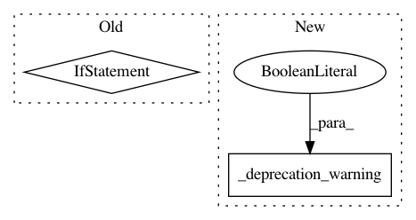

67c01455fe313a65cc65640e52892ed91e08ea8b,python/ray/tune/track/__init__.py,,get_session,#,10
Before Change
def get_session():
global _session
if not _session:
raise ValueError("Session not detected. Try `track.init()`?")
return _session
def init(ignore_reinit_error=True, **session_kwargs):
After Change
def get_session():
_deprecation_warning(soft=False)
def init(ignore_reinit_error=True, **session_kwargs):
_deprecation_warning(soft=False)
In pattern: SUPERPATTERN
Frequency: 3
Non-data size: 2
Instances
Project Name: ray-project/ray
Commit Name: 67c01455fe313a65cc65640e52892ed91e08ea8b
Time: 2020-05-16
Author: rliaw@berkeley.edu
File Name: python/ray/tune/track/__init__.py
Class Name:
Method Name: get_session
Project Name: ray-project/ray
Commit Name: 67c01455fe313a65cc65640e52892ed91e08ea8b
Time: 2020-05-16
Author: rliaw@berkeley.edu
File Name: python/ray/tune/track/__init__.py
Class Name:
Method Name: init
Project Name: ray-project/ray
Commit Name: 67c01455fe313a65cc65640e52892ed91e08ea8b
Time: 2020-05-16
Author: rliaw@berkeley.edu
File Name: python/ray/tune/track/__init__.py
Class Name:
Method Name: shutdown